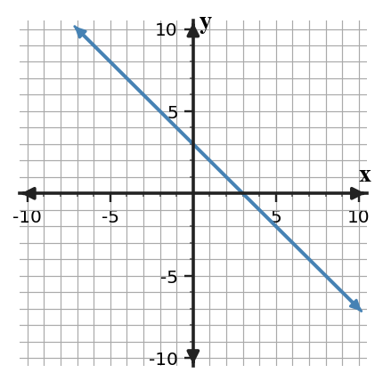

| x | y |
|---|---|
| 0 | 2 |
| 1 | 5 |
| 2 | 8 |
1. Write the equation.
2. For $y=-2x+7$, find $y$ when $x=4$.
3. Do $y=4x-1$ and the points $(0,-1)$ and $(2,7)$ describe the same relationship? Explain.
4. A taxi fare is 5 dollars plus 2 dollars per mile. Write an equation.

5. State the y-intercept.
| x | y |
|---|---|
| -1 | 0 |
| 0 | 2 |
| 1 | 4 |
| 2 | 7 |
6. Does this table match $y=2x+2$? Identify any mismatch.